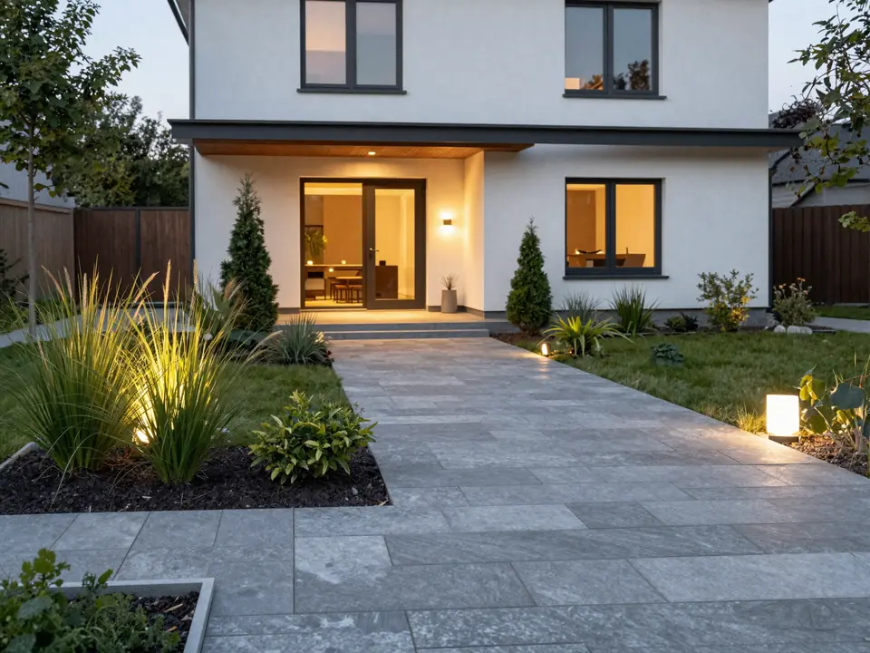
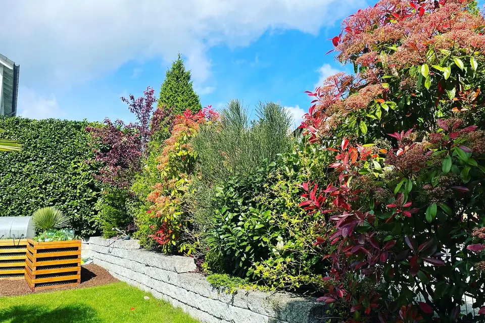
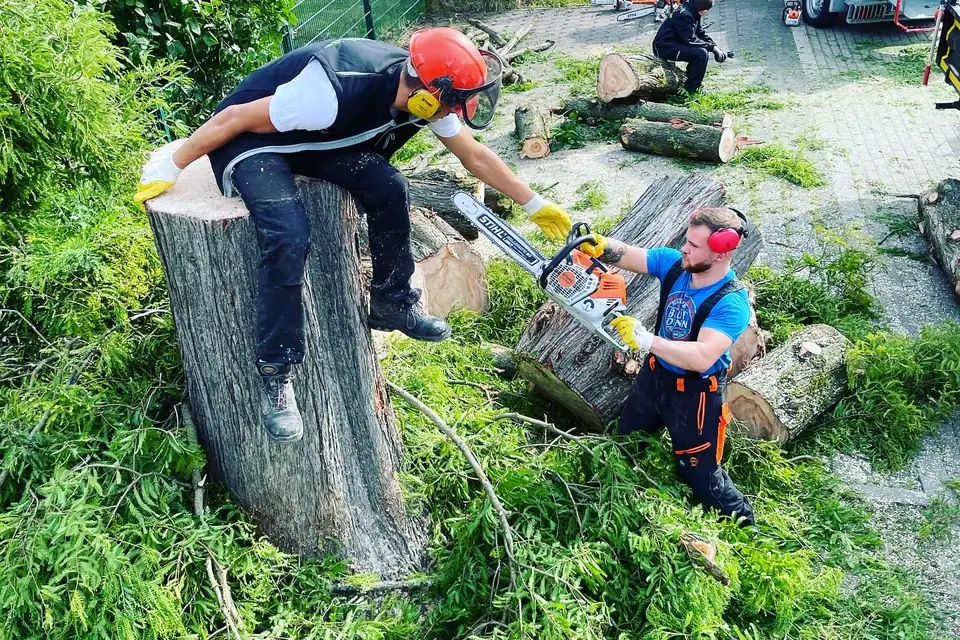
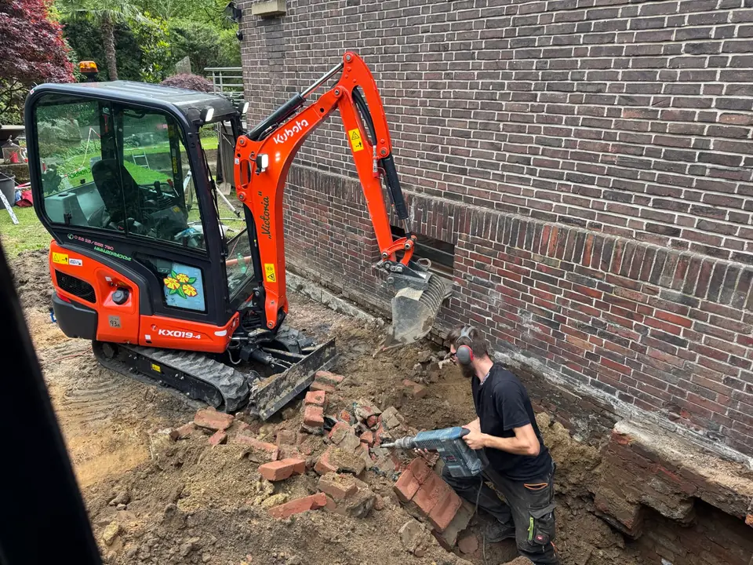
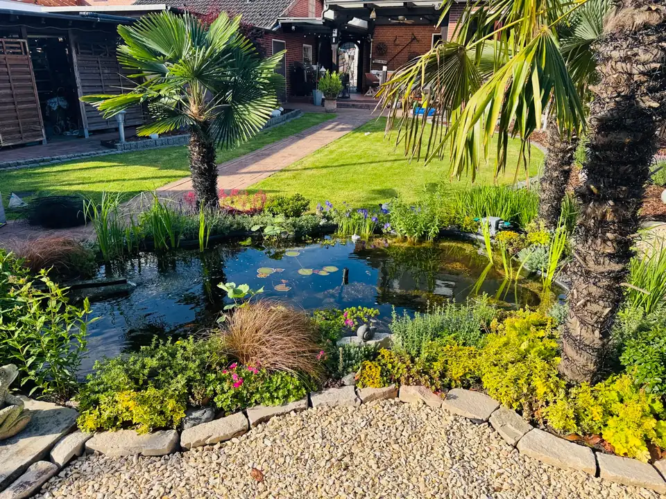
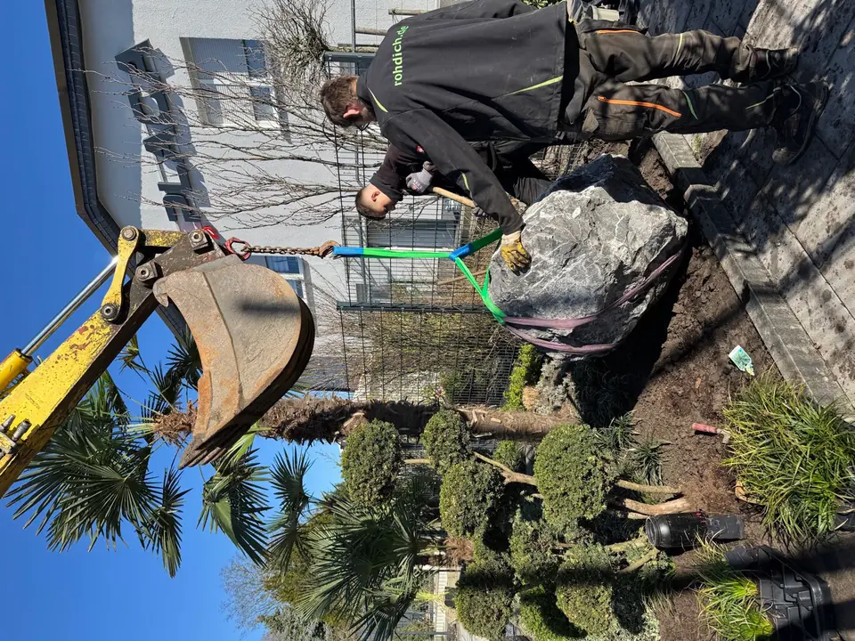
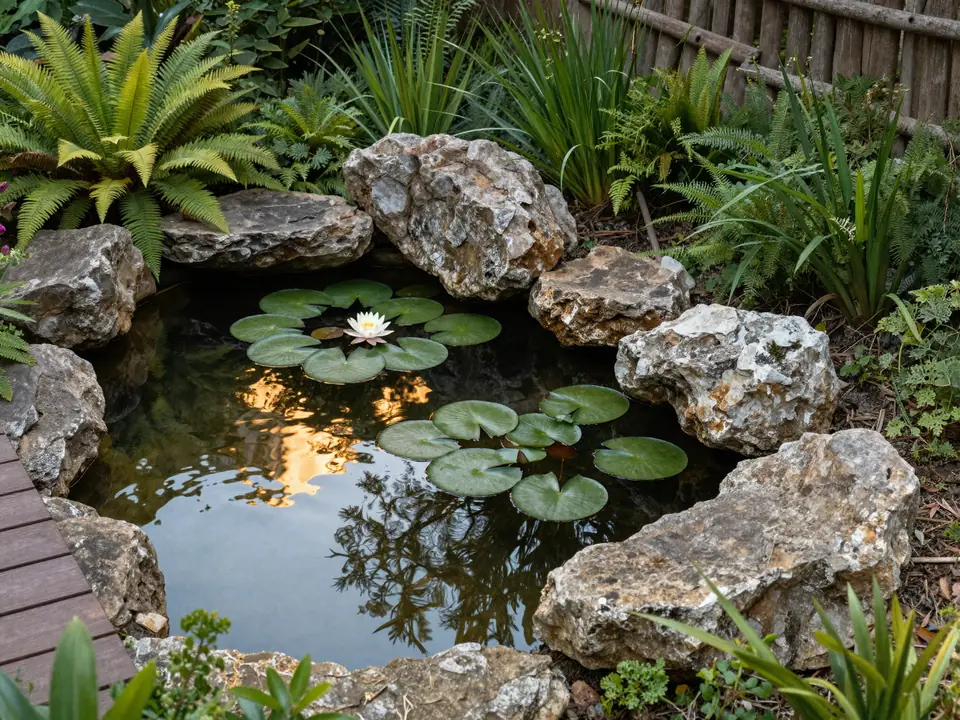
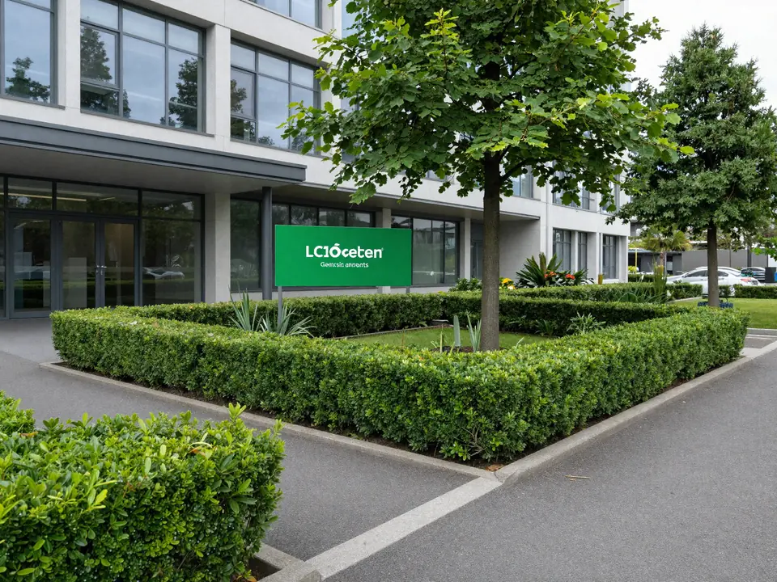

Herne
Vorgarten & Bepflanzung
Vorgarten-Neugestaltung mit Naturstein, strukturierter Bepflanzung und integrierter Beleuchtung.
Garten- und Landschaftsbau in Herne, Bochum, Castrop-Rauxel, Recklinghausen und Gelsenkirchen-Buer.


Nicht sicher, was passt? Alle Leistungen im Überblick →
Kein Vertriebsdruck, keine Ferndiagnose. Echte Nachweise, ehrliche Einschätzung und über 20 Jahre Arbeit fest in der Region.
„Mega Arbeit, tolles Team! Hatte schon 3-4 Firmen, aber hier wird gehalten, was gesagt wird. Top."
„Herr Rohdich und sein Team haben unseren Vorgarten neu gestaltet und das mit super Ideen und in einer Top-Ausführung! […] Kurzum: Absolut zufrieden und weiter zu empfehlen!"
„Bereits zum zweiten Mal die Einfahrt von Unkraut und Moos reinigen lassen. Schnell und professionell, das Ergebnis kann sich sehen lassen. Super Arbeit!"



Maik Rohdich führt den Betrieb seit 2003 mit einem klaren Anspruch: realistische Beratung statt schöner Versprechen. Jede Planung beginnt mit einem Blick auf das, was tatsächlich da ist – Grundstück, Nutzung, Pflegeaufwand, Budget. Erst dann wird gestaltet.
Echte Arbeiten, echte Orte. Drei Beispiele aus dem aktuellen Portfolio.

Vorgarten-Neugestaltung mit Naturstein, strukturierter Bepflanzung und integrierter Beleuchtung.

Teichbau mit natürlicher Uferzone, Sitzplatz und passender Bepflanzung rund um den Whirlpool.

Pflege, Baumkontrolle und Verkehrssicherheit für einen gewerblichen Standort mit hohem Publikumsverkehr.
Wählen Sie den passenden Bereich – Sie gelangen direkt zum richtigen Anfrageformular.
Schildern Sie Ihr Vorhaben – Maik Rohdich schaut sich Ihre Anfrage persönlich an.
Pflegeverträge, Baumkontrolle und Verkehrssicherungspflicht – planbar und dokumentiert.
Nicht sicher, oder akuter Sturm-/Baumschaden? 0171 / 173 89 43
Wenn Sie unten keine Antwort finden, reicht eine kurze Nachricht per WhatsApp – wir melden uns.
Sie erreichen uns per Anruf oder Nachricht, gern mit Fotos. Wir vereinbaren einen Termin und besichtigen das Vorhaben vor Ort. Bei Gestaltungsprojekten kommt ein Termin am Betrieb hinzu, um Materialien und Ideen anzusehen. Danach erhalten Sie ein auf Ihr Projekt zugeschnittenes Angebot.
Unser Schwerpunkt liegt in Herne, Bochum, Castrop-Rauxel, Recklinghausen und Gelsenkirchen-Buer. In diesem Umkreis sind wir regelmäßig für Privatkunden und Gewerbe tätig. Bei passenden Projekten arbeiten wir auch darüber hinaus – sprechen Sie uns einfach auf Ihren Ort an, dann sagen wir Ihnen, ob es passt.
Ja. Wir sind montags bis freitags von 09:00 bis 17:00 Uhr und samstags von 09:00 bis 12:00 Uhr erreichbar, sonntags geschlossen. Per WhatsApp können Sie uns rund um die Uhr schreiben – wir antworten innerhalb der Geschäftszeiten. Besuche am Betrieb sind ausschließlich nach vorheriger Terminvereinbarung möglich, auch innerhalb der Öffnungszeiten.
Nein. Auch innerhalb unserer Erreichbarkeit von montags bis freitags, 09:00 bis 17:00 Uhr, und samstags von 09:00 bis 12:00 Uhr sind Besuche am Betrieb ausschließlich nach vorheriger Terminvereinbarung möglich. Eine klassische Ladenöffnung gibt es nicht. Einen Termin vereinbaren Sie ganz einfach per Telefon, WhatsApp oder über das Formular.
Ja, sehr gerne und rund um die Uhr. Bilder helfen uns, Ihr Anliegen schon vor dem Termin einzuschätzen. Senden Sie einfach ein paar Fotos und den Ort per WhatsApp an 0171 / 173 89 43. Wir antworten innerhalb der Geschäftszeiten und melden uns mit den nächsten Schritten.
Wir decken den Garten- und Landschaftsbau in ganzer Breite ab: Gartengestaltung, Vorgärten, Bepflanzung, Teichanlagen, Terrassen und Pflasterarbeiten, Dachbegrünung, Gartenpflege, Baumarbeiten, Baumkontrolle mit Gutachten, Sturmnotdienst und Brennholz. Für Gewerbe kommt die laufende Außenanlagenpflege hinzu. Einen vollständigen Überblick finden Sie auf der Leistungsseite.
Ja, beides. Für Privatkunden gestalten und pflegen wir Gärten, Vorgärten, Teiche und Bepflanzung, begrünen Dächer und führen Baumarbeiten aus. Für Gewerbekunden übernehmen wir die laufende Außenanlagenpflege, die Baumkontrolle und Gutachten zur Verkehrssicherheit. Was zu Ihrem Vorhaben passt, klären wir im Gespräch.
Den Aufwand bestimmen vor allem Fläche, Untergrund und die Zugänglichkeit für Maschinen, dazu Materialwahl, Entwässerung und der spätere Pflegeaufwand. Pauschalpreise nennen wir nicht, weil sich diese Faktoren von Grundstück zu Grundstück stark unterscheiden. Nach der Besichtigung können wir den Rahmen für Ihr Projekt konkret einschätzen.
Ein kompletter Garten liegt erfahrungsgemäß bei rund zwei Wochen, abhängig von Umfang, Untergrund und Wetter. Kleinere Arbeiten wie ein Vorgarten sind oft in wenigen Tagen fertig. Den zeitlichen Rahmen für Ihr Projekt nennen wir nach der Besichtigung, wenn wir Fläche und Aufwand kennen.
Bei größeren Projekten kann eine Anzahlung oder Teilzahlung üblich sein – das besprechen wir vor der Beauftragung transparent, sodass Sie von Anfang an wissen, woran Sie sind. Bei kleineren Aufträgen ist das in der Regel nicht nötig. Was vereinbart wird, steht vorher fest; versteckte Kosten gibt es nicht.
Ein starker Rückschnitt ist nur zwischen dem 1. Oktober und dem 28./29. Februar erlaubt, weil in der Vegetationszeit brütende Vögel geschützt sind (§ 39 BNatSchG). Ein schonender Form- und Pflegeschnitt ist ganzjährig zulässig. Planen Sie den kräftigen Schnitt also rechtzeitig vor dem Frühjahr ein.
Häufig ja, über kommunale Programme. Ob und in welcher Höhe eine Förderung möglich ist, hängt vom Ort ab und ändert sich von Kommune zu Kommune. Wir weisen im Beratungstermin darauf hin und prüfen mit Ihnen, ob Ihr Dach in Frage kommt. Den Antrag stellen Sie als Eigentümer selbst.
Ja. Als Sachverständiger für Baumkontrolle prüfen wir Bäume auf ihre Verkehrssicherheit – für private Grundstücke, Hausverwaltungen und Gewerbe. Sie erhalten eine nachvollziehbare Einschätzung zum Zustand und auf Wunsch eine Dokumentation, mit der Sie Ihrer Verkehrssicherungspflicht nachkommen. Der genaue Umfang hängt vom Bestand ab.
Ja. Nach Unwettern sichern und beseitigen wir Gefahren durch beschädigte Bäume – umgestürzte Stämme, angebrochene Äste und instabile Kronen. Melden Sie sich am besten mit Fotos und Standort per WhatsApp oder telefonisch. Dann schätzen wir die Lage schnell ein und sichern zuerst die Gefahrenstelle.
Ja. Aus unseren Baumarbeiten fällt Holz an, das wir zu Brennholz und Stammholz aufarbeiten und regional abgeben. Verfügbarkeit, Holzart und Menge schwanken je nachdem, was gerade anfällt. Am besten fragen Sie kurz an, was vorrätig ist – Abholung oder Lieferung stimmen wir dann ab.
Ja, allerdings nicht als frei zugängliche Ausstellung. Bei passenden Gestaltungsprojekten sehen wir Materialien, Pflanzen und Gestaltungsideen gemeinsam am Betrieb an – ausschließlich nach vorheriger Terminvereinbarung. So bekommen Sie ein Gefühl dafür, was zusammenpasst. Unangemeldete Besuche sind nicht möglich.
Ja. Wir bilden im Garten- und Landschaftsbau aus. Für Sie ist das ein Hinweis auf Fachlichkeit und Beständigkeit: Ein Betrieb, der ausbildet, gibt Wissen strukturiert weiter und arbeitet nach anerkannten fachlichen Standards. Das kommt auch der Qualität auf Ihrer Baustelle zugute.
Für welchen Bereich suchen Sie diese Leistung?